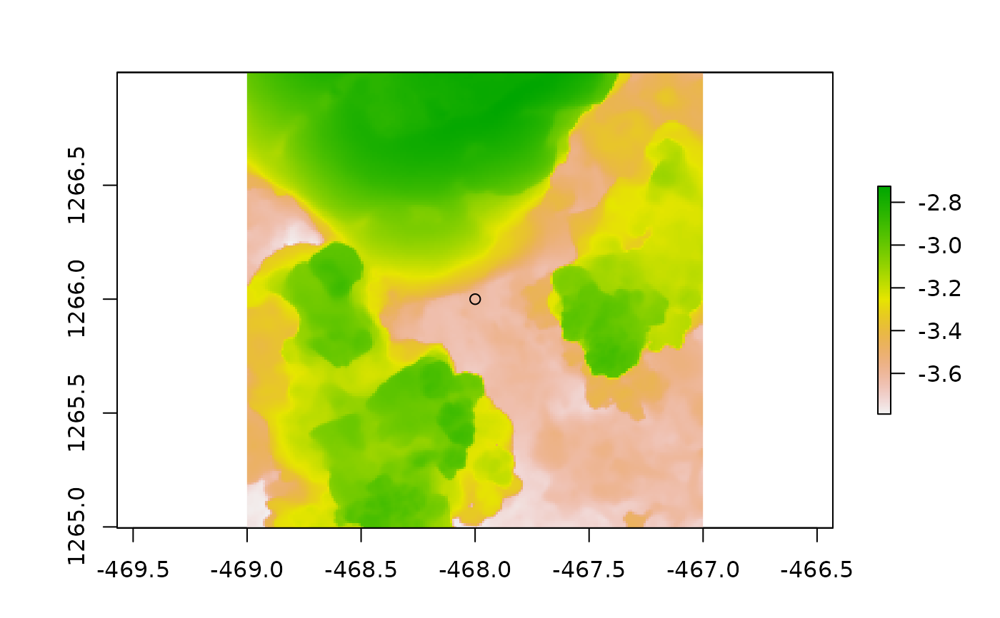

A function for sampling a DEM by cropping squares of a given size around xy coordinates.
Examples
# around one point
dem_cropped <- dem_crop(horseshoe, -468, 1266, L = 2)
raster::plot(dem_cropped)
points(-468, 1266)

# around multiple points
points <- data.frame(x = c(-467, -465, -466), y = c(1270, 1265, 1268))
dem_list <- dem_crop(horseshoe, points$x, points$y, L = 1, plot = TRUE)
 # plot the first element
raster::plot(dem_list[[1]])
# plot the first element
raster::plot(dem_list[[1]])